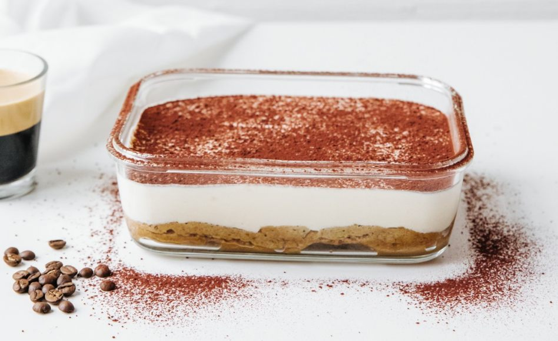

Speculoos Tiramisu

Description
This speculoos tiramisu is a simple variation on the classic Italian tiramisu with speculoos cookies. This fabulous dessert is made with speculoos (biscoff) biscuits, espresso, mascarpone cheese, sugar, eggs, cocoa powder and sea salt.
Ingredients
- 3 eggs
- 3 tbsp of sugar
- 0.5Kg of mascarpone
- 24 speculoos
- 2 strong cold espresso
- cocoa powder
- Sea salt
Steps
- Separate yolks and whites.
- Mix the yolks with the sugar in the bow of your stand alone mixer with the paddle attachment on high speed for 5 minutes, or until it turns white and creamy.
- Add in the mascarpone and mix for 2 more minutes.
- At the same time, mix the egg whites with a pinch of salt until stiff peaks form.
- Gently fold the egg whites into the initial mixture.
- Crush 3/4 of the speculoos cookies until you have a powder mixed with some small chunks.
- Pour in the espresso and mix with a spoon.
- Put a teaspoon of the broken speculoos into the bottom of the shot glass.
- Add a teaspoon of cream.
- Repeat the process with speculoos, cream, speculoos and cream.
- Cover with plastic wrap and refrigerate for 6h or overnight. Remove from the fridge.
- Crush the rest of speculoos to make the topping and sprinkle over the tiramisu.
- Sprinkle some cocoa powder over the tiramisu as well to top it off.
- Leave it in the refrigerator for at least 6 hours and up to 24 hours.
- Enjoy your Speculoss Tiramisu!
Other delicious dessert

This Woodland and animal cake is a chocolate sponge cake that is layered with a rich cherry filling and is based on the German dessert Schwarzwälder Kirschtorte, which means “Black Forest Cherry Torte”.

The Mandazi are amazingly soft donuts very famous in East Africa. They are excellent served with a cup of tea or coffee.